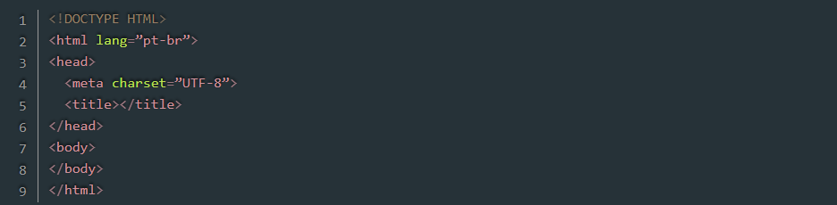

Um pouco de história.
Com o surgimento da web, era necessário
criar uma linguagem que fosse entendida
por meios de acesso diferentes. Para tanto,
Tim Berners-Lee desenvolveu o HTML, com
a proposta de suprir essa necessidade. Somente
na década de 1990, quando o Mosaic
– browser desenvolvido por Marc Andreessen –
se popularizou, o HTML ganhou força e foi adotado
por outros desenvolvedores e fabricante de browsers,
compartilhando as mesmas convenções.
HTML é uma abreviação de Hypertext Markup Language,
ou seja, Linguagem de Marcação de Hipertexto. Resumindo,
o HTML é uma linguagem usada para a publicação de conteúdo
(texto, imagens, vídeos, áudio etc.) na web.
Para que você possa entender bem,
o HTML é baseado no conceito de hipertexto,
que são conjuntos de elementos ligados por conexões,
que podem ser palavras, imagens, vídeos, áudio,
documentos etc. que quando conectados, formam uma
grande rede de informação. A conexão feita em um
hipertexto é algo imprevisto que permite a
comunicação de dados, organizando conhecimentos
e guardando informações relacionadas.
A estrutura básica do HTML5 "DOCTYPE". Abaixo podemos ver no exemplo abaixo:

História do CSS: O Cascading Style Sheets (CSS)
é a linguagem de estilo que molda a aparência
visual da World Wide Web. Desde sua criação,
o CSS evoluiu significativamente, transformando
páginas web simples em experiências visuais ricas.
No início da web, a formatação visual de uma página
era definida diretamente no código HTML. Isso resultava
em um código repetitivo, difícil de manter
e pouco flexível. Em 1994, Håkon Wium Lie e Bert Bos,
percebendo essa limitação, propuseram a criação de uma
linguagem separada para lidar com as estilizações: o CSS.
A ideia era simples, mas revolucionária: separar a estrutura (HTML) da apresentação (CSS). Com o CSS, os desenvolvedores podiam aplicar estilos a elementos HTML de forma mais eficiente e organizada. As primeiras especificações do CSS foram publicadas pelo World Wide Web Consortium (W3C) em 1996.
O CSS1 introduziu os conceitos básicos de estilo,
como cores, fontes, margens e alinhamento. Com ele,
foi possível criar layouts simples e aplicar estilos
a elementos individuais de uma página. No entanto, o
CSS1 tinha suas limitações, e muitos desenvolvedores
ainda recorriam a tabelas HTML para criar layouts mais complexos.
O CSS2, lançado em 1998, trouxe uma série de novas funcionalidades, como posicionamento absoluto e relativo, modelos de caixa, e a capacidade de criar layouts mais sofisticados. Com o CSS2, os desenvolvedores ganharam mais controle sobre a aparência de suas páginas.
Enquanto o CSS continuava a evoluir,
os desenvolvedores buscavam maneiras de
tornar o processo de escrita de estilos
mais eficiente e organizado. Surgiram então
os pré-processadores CSS, como Sass, Less e Stylus.
Esses pré-processadores adicionam funcionalidades
ao CSS, como variáveis, mixins, aninhamento e funções,
tornando o código mais conciso e reutilizável.
O CSS3, lançado em várias etapas ao longo dos anos, trouxe uma série de novas funcionalidades que transformaram a forma como os desenvolvedores criam interfaces web.